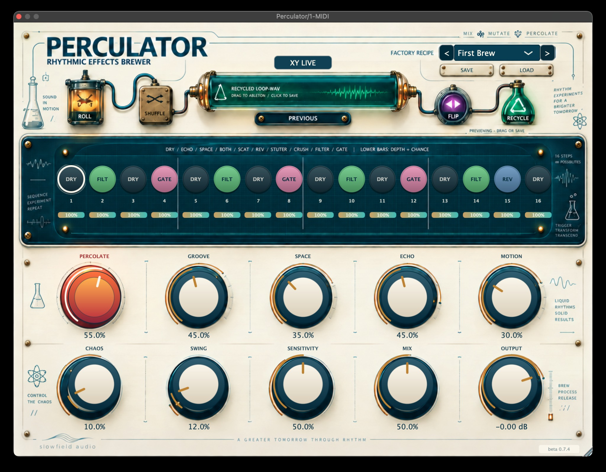

![Slowfield Audio]()
Perculator
Perculator turns a drum or percussion loop into a playable rhythmic instrument. Its 16-step sequencer combines individual effect actions with per-step Depth + Chance, while Roll, Shuffle, Flip and ReCycle provide four very different routes away from the original pattern. The aim is fast mutation without throwing away the musical identity of the source.

Sixteen slices. Ten possible behaviours on every step.
Each sequencer disc cycles through Dry, Echo, Space, Both, Scatter, Reverse, Stutter, Crush, Filter and Gate. The slim bar underneath each step combines effect intensity with the probability that the step will fire, so a pattern can be deliberate, sparse or unstable without leaving the main interface.
The workflow is intentionally immediate: start from a factory recipe, raise Percolate, set Sensitivity so important hits are detected correctly, then shape the loop using Groove, Space, Echo, Motion, Chaos and Swing.
A fast first minute
- Insert Perculator on a stereo drum or percussion track and start playback.
- Choose First Brew as a balanced starting recipe.
- Raise PERCOLATE until the rhythm begins to move.
- Set SENSITIVITY if effects trigger too often or miss important hits.
- Shape the feel with Groove, Space, Echo, Motion, Chaos and Swing.
- Blend and level with Mix and Output.
Broad musical steering rather than parameter overload.
XY Live
The pop-out performance pad is designed for expressive automation: horizontal movement blends Space toward Echo, while vertical movement increases Motion and Chaos. Double-click returns the pad to centre.
Save + Load
User presets are stored as portable .perculator files. Host automation and full session-state recall are supported, so experiments can become repeatable tools rather than one-off accidents.
Not just another effects randomiser.
ReCycle captures one clean 16-step source bar at the next step-one boundary. Transient analysis identifies likely kick, backbeat, hat and ghost-note events, then the current ReSeq blueprint reconstructs their order using short equal-power crossfades.
At the next bar boundary the exact recycled result is auditioned in sync with the DAW. Press ReCycle again and Perculator starts from the protected clean source, so repeated variations do not accumulate generational degradation.
The result can be rendered as a 24-bit stereo loop at the current project sample rate and dragged directly back into Ableton or saved as a permanent WAV file.
What happens when you press ReCycle
- Capture waits for step 1 and records one clean bar.
- Transient roles are identified.
- The event order is rebuilt from the recipe blueprint.
- The new result starts on the next bar boundary.
- Drag the recycled WAV tile into the DAW or click to save it.
- Press ReCycle again for another clean-source variation.
From gentle movement to an alternate-universe groove.
Perculator ships with 23 sound-shaping recipes and 17 explicit ReSeq beat-reconstruction recipes. The first group changes the colour and movement of the rhythm; the second group changes the structure itself.
Beta testing that helps
Tell us about CPU behaviour, host sync, preset loading, drag/export problems, graphical issues and anything that feels musically wrong. Include your DAW, operating system, plugin format and the kind of source loop you were using.
Useful troubleshooting
If effects are too busy, lower Percolate, Chaos or individual Depth + Chance. If hits are missed, raise Sensitivity. If ReCycle is waiting, keep the DAW transport running so capture can begin cleanly at step 1.
Turn a familiar loop into material for the next arrangement.
Use Perculator for subtle movement, performance-driven FX, or full rhythmic reconstruction — then drag the version worth keeping straight back into the session.